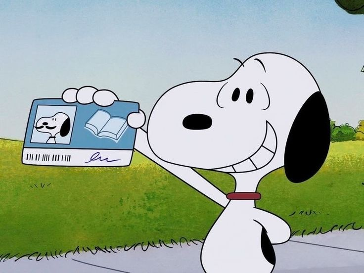

La vida de Snoopy
En un cálido día de primavera, un pequeño Beagle con una personalidad desbordante llegó al barrio. Snoopy, con su característico andar seguro, caminaba llevando una pequeña mochila llena de sus pertenencias. En la mochila, llevaba su identificación, un documento que detallaba su nombre completo, su lugar de nacimiento en la granja de cachorros "Daisy Hill", y una breve descripción de su carácter amistoso. Snoopy decidió que su primer destino sería el parque central, donde siempre había niños y otros animales jugando. Al llegar, se encontró con un grupo de perros que jugaban alegremente. Con una sonrisa y un movimiento amistoso de la cola, se acercó y dijo:"Hola a todos, soy Snoopy. Acabo de mudarme al barrio y me encantaría hacer nuevos amigos". Uno de los perros, un simpático Golden Retriever llamado Max, se acercó y le preguntó: "¿Tienes alguna identificación?". Snoopy, siempre preparado, sacó su documento de su mochila y se lo mostró a Max. "Veo que eres de Daisy Hill. Mi primo también nació allí. ¡Bienvenido al barrio, Snoopy!". Pronto, todos los perros se reunieron alrededor de Snoopy, haciéndole preguntas y contándole sobre los mejores lugares para jugar y comer en el barrio. Entre ellos estaba Bella, una elegante Poodle, y Rocky, un Bulldog juguetón. Incluso el viejo Tom, un gato que siempre observaba desde una distancia segura, parecía curioso sobre el nuevo vecino. Mientras el sol comenzaba a ponerse, el parque se llenó de risas y ladridos felices. Snoopy había logrado lo que se había propuesto: presentarse, mostrar su identificación y hacer nuevos amigos. Se sintió acogido y supo que este nuevo barrio sería un lugar maravilloso para vivir. Con una última mirada a sus nuevos amigos, v se despidió por el día, emocionado por todas las aventuras que el futuro traería.
En un cálido atardecer, Snoopy decidió relajarse en el jardín de Carlitos, su lugar favorito para descansar. Con una toalla en la cabeza, recién salido de un refrescante baño, y un periódico bajo el brazo, caminó hacia una pequeña mesa adornada con una tetera y una taza de té humeante. Se acomodó en una silla, dejando escapar un suspiro de satisfacción. Mientras sorbía el té, Snoopy echó un vistazo al periódico, disfrutando de los titulares y las historietas. El jardín de Carlitos era un oasis de tranquilidad, con flores coloridas y un suave césped que lo invitaba a relajarse. A pesar de su conocida claustrofobia, el exterior de su caseta era su refugio perfecto, permitiéndole observar el mundo sin sentirse atrapado. Los vecinos, curiosos por el peculiar beagle, pasaban y saludaban. Bella, la elegante Poodle, se acercó y dijo: "¡Qué bien te ves, Snoopy! ¿Disfrutando de una tarde tranquila?". Snoopy asintió con una sonrisa, levantando su taza en un gesto de camaradería. Entre sorbos de té y ojeadas al periódico, Snoopy pensó en lo afortunado que era. Tenía amigos maravillosos y un hogar donde siempre se sentía bienvenido. Mientras el sol se ponía, llenando el cielo de tonos anaranjados y rosados, Snoopy se sintió en paz. La vida en el jardín de Carlitos era perfecta, y cada día traía nuevas aventuras y momentos de calma que apreciaba profundamente.
Después de una tarde relajante en el jardín de Carlitos, Snoopy decidió que era hora de terminar su día con una visita al centro comercial. Quería comprar algo de ropa nueva para renovar su guardarropa. Así que, con entusiasmo, se dirigió al centro comercial, donde sabía que encontraría una gran variedad de prendas para elegir. Al llegar, Snoopy se dirigió a la tienda de ropa para perros más grande del lugar. Las estanterías estaban llenas de opciones: camisetas coloridas, suéteres acogedores, chaquetas elegantes y hasta algunos disfraces divertidos. Snoopy comenzó a pasear entre los estantes, mirando con curiosidad cada prenda. Primero, vio una camiseta roja con una gran estrella en el centro. "Esto sería genial para mis días de aventuras", pensó. Luego, encontró un suéter de lana azul, perfecto para las noches frías. "Esto me mantendría abrigado en invierno", se dijo a sí mismo. Mientras continuaba explorando, se encontró con una chaqueta de cuero negra que le recordó a un aviador. "¡Esto me haría ver muy rudo!", exclamó emocionado. Pero luego, se topó con un disfraz de superhéroe completo con capa y todo. "¡Esto sería perfecto para Halloween o para impresionar a mis amigos!", pensó. Snoopy estaba indeciso. Cada prenda parecía tener su propio encanto y utilidad. Se sentó un momento para reflexionar, mirando las opciones que había seleccionado. Recordó las palabras de su amigo Woodstock: "Siempre elige lo que te haga sentir más feliz". Con eso en mente, Snoopy decidió llevar la camiseta roja para sus aventuras diarias y la chaqueta de cuero para ocasiones especiales. Contento con su elección, se dirigió a la caja, pagó sus compras y salió de la tienda con una sonrisa en su rostro. Caminó de regreso a casa, emocionado por mostrarle a Carlitos sus nuevas adquisiciones. El día había sido perfecto y Snoopy no podía esperar para ver qué aventuras le esperaban con su nuevo guardarropa.